A hands-on Python walk through the data: cleaning, distributions, behaviour, risk, and drill-down scenarios.
Chapter 1 fixed a canonical preparation for the statistical chapters; this chapter takes the complementary route and works through the same raw file by hand. Doing both is deliberate: before any hypothesis is stated or model fitted, an analyst should know the data’s texture — where values pile up and where they explode, what is missing and why that might be, how rare the thing being studied actually is. Those observations are what make the later choices (log scales, robustness checks, imbalance-aware evaluation) feel inevitable rather than arbitrary.
The data is the Kaggle Ethereum Fraud Detection dataset: one row per Ethereum address (9,841 in total, 50 features), aggregating each address’s transaction history — volumes, timings, counterparties, Ether values and ERC20 token activity — together with a FLAG marking addresses known to have engaged in fraud. Roughly one address in five is flagged, an imbalance that shapes how every later result in this suite should be read.
The exploration runs in three movements: cleaning and inspection (missingness, imputation, distributions, outliers, class balance), general investigation (transaction- and address-level patterns, then behaviour, risk and correlation analysis), and drill-down scenarios that chase specific fraud hypotheses through the data. It closes with what these patterns suggest — and what, at this stage, they cannot yet prove.
Data Cleaning and Preparation and Initial Inspection
First, the unglamorous part that decides everything else: what state is the data actually in?
Code
# Ethereum Fraud Detection Dataset Analysis# librariesimport osimport pandas as pdimport numpy as npimport matplotlib.pyplot as pltimport seaborn as snsfrom IPython.display import display, Markdownimport os## Load and Inspect Data##os. getcwd()# Load the datasetdf = pd.read_csv('data/transaction_dataset.csv')# column names to lowercasedf.columns = df.columns.str.lower()# dataset subset used in the analysisdata_subset = ['address', 'flag', 'avg min between sent tnx', 'avg min between received tnx','sent tnx', 'received tnx', 'total transactions (including tnx to create contract','total ether sent', 'total ether received', 'avg val received', 'avg val sent','number of created contracts', 'unique received from addresses', 'unique sent to addresses', 'time diff between first and last (mins)', 'min value received', 'max value received', 'min val sent', 'max val sent', 'erc20 most sent token type', 'erc20_most_rec_token_type']# reduce dataset to subsetdf = df[data_subset]# basic information about the datasetprint("\nInfo of DataFrame subset used in th analysis:\n")df.info()# sample rows print("\nSample Rows:")display(df.head())# summary statistics print("\nSummary Statistics:")display(df.describe())
Info of DataFrame subset used in th analysis:
<class 'pandas.core.frame.DataFrame'>
RangeIndex: 9841 entries, 0 to 9840
Data columns (total 21 columns):
# Column Non-Null Count Dtype
--- ------ -------------- -----
0 address 9841 non-null object
1 flag 9841 non-null int64
2 avg min between sent tnx 9841 non-null float64
3 avg min between received tnx 9841 non-null float64
4 sent tnx 9841 non-null int64
5 received tnx 9841 non-null int64
6 total transactions (including tnx to create contract 9841 non-null int64
7 total ether sent 9841 non-null float64
8 total ether received 9841 non-null float64
9 avg val received 9841 non-null float64
10 avg val sent 9841 non-null float64
11 number of created contracts 9841 non-null int64
12 unique received from addresses 9841 non-null int64
13 unique sent to addresses 9841 non-null int64
14 time diff between first and last (mins) 9841 non-null float64
15 min value received 9841 non-null float64
16 max value received 9841 non-null float64
17 min val sent 9841 non-null float64
18 max val sent 9841 non-null float64
19 erc20 most sent token type 7809 non-null object
20 erc20_most_rec_token_type 8969 non-null object
dtypes: float64(11), int64(7), object(3)
memory usage: 1.6+ MB
Sample Rows:
address
flag
avg min between sent tnx
avg min between received tnx
sent tnx
received tnx
total transactions (including tnx to create contract
total ether sent
total ether received
avg val received
...
number of created contracts
unique received from addresses
unique sent to addresses
time diff between first and last (mins)
min value received
max value received
min val sent
max val sent
erc20 most sent token type
erc20_most_rec_token_type
0
0x00009277775ac7d0d59eaad8fee3d10ac6c805e8
0
844.26
1093.71
721
89
810
865.691093
586.466675
6.589513
...
0
40
118
704785.63
0.000000
45.806785
0.00
31.220000
Cofoundit
Numeraire
1
0x0002b44ddb1476db43c868bd494422ee4c136fed
0
12709.07
2958.44
94
8
102
3.087297
3.085478
0.385685
...
0
5
14
1218216.73
0.000000
2.613269
0.00
1.800000
Livepeer Token
Livepeer Token
2
0x0002bda54cb772d040f779e88eb453cac0daa244
0
246194.54
2434.02
2
10
12
3.588616
3.589057
0.358906
...
0
10
2
516729.30
0.113119
1.165453
0.05
3.538616
None
XENON
3
0x00038e6ba2fd5c09aedb96697c8d7b8fa6632e5e
0
10219.60
15785.09
25
9
34
1750.045862
895.399559
99.488840
...
0
7
13
397555.90
0.000000
500.000000
0.00
450.000000
Raiden
XENON
4
0x00062d1dd1afb6fb02540ddad9cdebfe568e0d89
0
36.61
10707.77
4598
20
4619
104.318883
53.421897
2.671095
...
1
7
19
382472.42
0.000000
12.802411
0.00
9.000000
StatusNetwork
EOS
5 rows × 21 columns
Summary Statistics:
flag
avg min between sent tnx
avg min between received tnx
sent tnx
received tnx
total transactions (including tnx to create contract
total ether sent
total ether received
avg val received
avg val sent
number of created contracts
unique received from addresses
unique sent to addresses
time diff between first and last (mins)
min value received
max value received
min val sent
max val sent
count
9841.000000
9841.000000
9841.000000
9841.000000
9841.000000
9841.000000
9.841000e+03
9.841000e+03
9841.000000
9841.000000
9841.000000
9841.000000
9841.000000
9.841000e+03
9841.000000
9841.000000
9841.000000
9841.000000
mean
0.221421
5086.878721
8004.851184
115.931714
163.700945
283.362362
1.016092e+04
1.163832e+04
100.711721
44.755731
3.729702
30.360939
25.840159
2.183333e+05
43.845153
523.152481
4.800090
314.617297
std
0.415224
21486.549974
23081.714801
757.226361
940.836550
1352.404013
3.583227e+05
3.642048e+05
2885.002236
239.080215
141.445583
298.621112
263.820410
3.229379e+05
325.929139
13008.821539
138.609682
6629.212643
min
0.000000
0.000000
0.000000
0.000000
0.000000
0.000000
0.000000e+00
0.000000e+00
0.000000
0.000000
0.000000
0.000000
0.000000
0.000000e+00
0.000000
0.000000
0.000000
0.000000
25%
0.000000
0.000000
0.000000
1.000000
1.000000
4.000000
2.262059e-01
2.670424e+00
0.426905
0.086184
0.000000
1.000000
1.000000
3.169300e+02
0.001000
1.000000
0.000000
0.164577
50%
0.000000
17.340000
509.770000
3.000000
4.000000
8.000000
1.248680e+01
3.052963e+01
1.729730
1.606000
0.000000
2.000000
2.000000
4.663703e+04
0.095856
6.000000
0.049126
4.999380
75%
0.000000
565.470000
5480.390000
11.000000
27.000000
54.000000
1.009990e+02
1.010000e+02
22.000000
21.999380
0.000000
5.000000
3.000000
3.040710e+05
2.000000
67.067040
0.998800
61.520653
max
1.000000
430287.670000
482175.490000
10000.000000
10000.000000
19995.000000
2.858096e+07
2.858159e+07
283618.831600
12000.000000
9995.000000
9999.000000
9287.000000
1.954861e+06
10000.000000
800000.000000
12000.000000
520000.000000
Missing, Zero, and Whitespace Values
This step identifies data quality issues:
Missing Values: Percentage of values that are null.
Whitespace Values: Proportion of columns containing (only) spaces.
Zero Values: Columns with zero values, which may or may not be placeholders.
The resulting summary table highlights columns requring further attention.
Code
## Missing values - Whitespace - Zerosmissing_values =round((df.isnull().sum() /len(df)) *100,2)white_space = (df.applymap(lambda x: isinstance(x, str) and x ==' ').sum() /len(df) *100).round(2)zeros = (df.applymap(lambda x: x ==0or x =='0' ).sum() /len(df) *100).round(2)# Combine into a single DataFramesummary_table = pd.DataFrame({'Zero (%)': zeros,'White Space (%)': white_space,'Missing (%)': missing_values})# create a summary tablesummary_table = summary_table[summary_table.sum(axis=1)>0]# show tablesummary_table
Zero (%)
White Space (%)
Missing (%)
flag
77.86
0.0
0.00
avg min between sent tnx
35.79
0.0
0.00
avg min between received tnx
28.75
0.0
0.00
sent tnx
20.48
0.0
0.00
received tnx
5.60
0.0
0.00
total transactions (including tnx to create contract
5.38
0.0
0.00
total ether sent
21.00
0.0
0.00
total ether received
7.18
0.0
0.00
avg val received
7.20
0.0
0.00
avg val sent
21.00
0.0
0.00
number of created contracts
86.22
0.0
0.00
unique received from addresses
5.60
0.0
0.00
unique sent to addresses
20.48
0.0
0.00
time diff between first and last (mins)
6.41
0.0
0.00
min value received
21.03
0.0
0.00
max value received
7.18
0.0
0.00
min val sent
36.02
0.0
0.00
max val sent
21.00
0.0
0.00
erc20 most sent token type
44.70
0.0
20.65
erc20_most_rec_token_type
44.70
0.0
8.86
Imputation of Missing Values
Columns erc20 most sent token type and erc20_most_rec_token_type were imputed with 'none' to handle missing or zero values.
Code
# impute with placeholderscolumns_to_imp = ['erc20 most sent token type', 'erc20_most_rec_token_type']df[columns_to_imp] = df[columns_to_imp].replace(0, 'none')df['erc20 most sent token type'].fillna('none', inplace=True)df['erc20_most_rec_token_type'].fillna('none', inplace=True)
Numeric Data Distribution
Visual inspection of the histograms shows that numeric columns used in the analysis do not appear to approximate a normal distribution, showing extreme outliers which can be seen in the following selectged plots.
Code
## Distribution - Normality Check (of features chosen as part of the analysis in numeric_columns)numeric_columns_subset = ['sent tnx','received tnx']# rows and columns for the gridnum_cols =2num_rows =int(np.ceil(len(numeric_columns_subset) / num_cols))# the gridfig, axes = plt.subplots(num_rows, num_cols, figsize=(15, 5* num_rows))# for indexingaxes = axes.flatten()# histograms of features in the numeric_columnsfor i, col inenumerate(numeric_columns_subset): sns.histplot(data=df, x=col, kde=False, ax=axes[i]) axes[i].set_title(f"Distribution of {col}") axes[i].set_xlabel(col) axes[i].set_ylabel("Frequency")# Remove not used (empty) subplotsfor j inrange(len(numeric_columns_subset), len(axes)): fig.delaxes(axes[j])plt.tight_layout()plt.show()
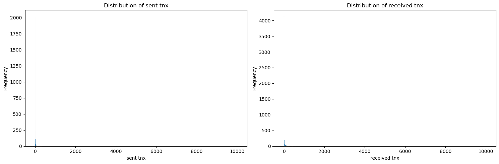
Log Transformation of Numeric Columns
To handle skewness, log transformations (log1p) were applied, the resulting distributions of several dataset attributes can be seen in the following histograms.
Code
## Transformations (logarithimic)# numeric data subset to perform log transformationnumeric_columns = ['avg min between sent tnx', 'avg min between received tnx','sent tnx', 'received tnx', 'total transactions (including tnx to create contract','total ether sent', 'total ether received', 'avg val received','avg val sent']# perform log transformationdf[numeric_columns] = df[numeric_columns].apply(np.log1p)# subset to visulaisenumeric_cols_to_vis = ['avg min between sent tnx', 'avg min between received tnx', 'sent tnx','received tnx', 'total transactions (including tnx to create contract','total ether sent']# rows and columns for the gridnum_cols =3num_rows =int(np.ceil(len(numeric_cols_to_vis) / num_cols))# the gridfig, axes = plt.subplots(num_rows, num_cols, figsize=(15, 5* num_rows))axes = axes.flatten()# Plot histograms fter log transformfor i, col inenumerate(numeric_cols_to_vis): sns.histplot(data=df, x=col, kde=True, ax=axes[i]) axes[i].set_title(f"Log-Transformed {col}")# Remove not used (empty) subplotsfor j inrange(len(numeric_cols_to_vis), len(axes)): fig.delaxes(axes[j])plt.tight_layout()plt.show()
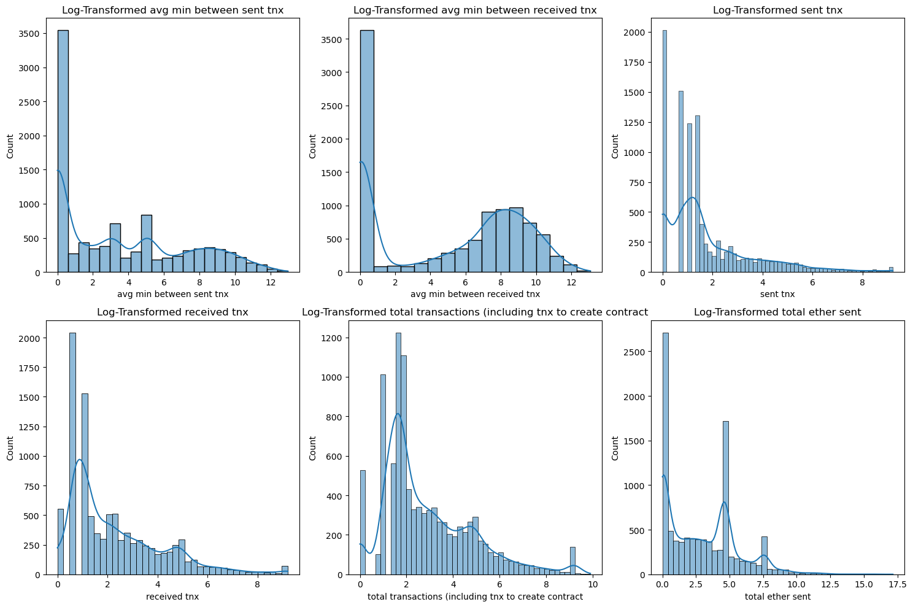
Outlier Detection
Boxplots (shown here are a few selected attributes)further indicate the existence of outliers in the analised columns.
Code
## Outliers# Check for outliers in numveric varsplt.figure(figsize=(12, 6))sns.boxplot(data=df[numeric_cols_to_vis], orient="v")plt.title("Outliers of variables used in analysis")plt.xticks(rotation=65, ha='right')plt.show()
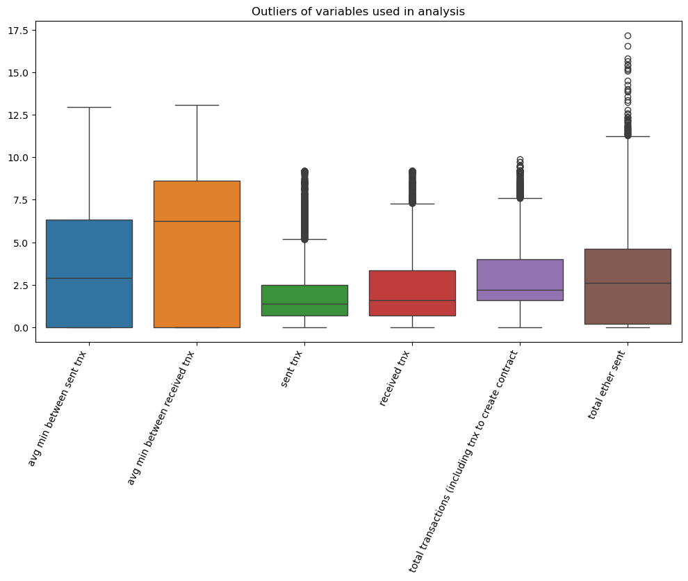
Code
## Duplicate Rows - Valuesdisplay(Markdown("### Duplicate Records and Recurring Ethereum Addresses"))# duplicate rows (records)duplicates = df.duplicated().sum()print(f"Number of duplicate rows/records: {duplicates}")# reccuring ETH addresses and their status (flagged or not)recuring_addr = df[df['address'].duplicated(keep=False)]print('Recuring addresses and their flag status (top 5):')display(recuring_addr[['address', 'flag']].head())# will not 'drop duplicate addresses as they might provide insights in the later analysis#df.drop_duplicates(subset='Address', inplace=True)print(f"Out of {df['address'].nunique()} total Ethereum addresses, there where {recuring_addr['address'].nunique()} reaccuring, none of which has been flagged as fraudulent.")
Duplicate Records and Recurring Ethereum Addresses
Number of duplicate rows/records: 18
Recuring addresses and their flag status (top 5):
address
flag
2908
0x4c13f6966dc24c92489344f0fd6f0e61f3489b84
0
2909
0x4c1da8781f6ca312bc11217b3f61e5dfdf428de1
0
2910
0x4c24af967901ec87a6644eb1ef42b680f58e67f5
0
2911
0x4c268c7b1d51b369153d6f1f28c61b15f0e17746
0
2912
0x4c26a3c12a64f33a3546fbb206c5365ce8e82c20
0
Out of 9816 total Ethereum addresses, there where 25 reaccuring, none of which has been flagged as fraudulent.
Class Imbalance
Fraudulent transactions constitute a smaller proportion of the dataset. This imbalance will require adjustments during modeling (in future project), such as resampling techniques or weighted metrics.
Code
## Imbalanced data# class distributionclass_distr = df['flag'].value_counts()class_distr_pct = df['flag'].value_counts(normalize=True) *100# Plot the distribution for visualizationsns.countplot(x='flag', data=df)plt.title("Counts of Fraud (1) and Non-Fraud (0) Instances")for i, v inenumerate(class_distr): plt.text(i, v, str(v), ha='center', va='bottom')plt.show()#print("Class Distribution:")#print("Absolute counts:")#print(class_dist)print("Class Percentages:")print(round(class_distr_pct,2))
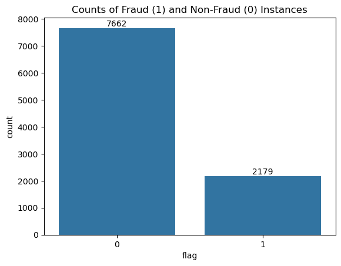
Class Percentages:
0 77.86
1 22.14
Name: flag, dtype: float64
General Exploration and Investigation
With the data cleaned and its shape understood, the investigation widens: how do transactions and addresses behave — and where do the flagged and legitimate populations part ways?
Transaction-based Investigation
This part focuses on specific columns for understanding transaction-related behaviour in the dataset and potential connection with (indicators) of fraudulent activity :
Distribution of Transaction Counts, highlights the transaction count distribution for fraudulent vs. legitimate addresses:
- Fraudulent accounts 'cluster' at lower (or higher transaction counts) as compared to legitimate ones.
- The shape of the distribution (skewness) and the KDE curve indicate (potentialy unusual) behavioral differences.
Avg Value Sent vs Received, visualises the relationship between ‘avg val sent’ and avg ‘val received’ for fraud vs. non-fraud groups
- Linear trend suggests that accounts generally maintain proportional sent/received values.
- Outliers (addresses with high 'avg val sent' but 'low avg val received') indicate unusual activity patterns.
Avg Minutes Between Sent Transactions: compares the average time gap between transactions for fraud and legitimate addresses.
- Shorter intervals might suggest automated behavior (for example bot accounts).
- Fraudulent accounts could have either very high or very low activity density, depending on their purpose.
Code
# Setting up the plot stylesns.set(style="whitegrid")# for plotsfig, ((ax1, ax2, ax3)) = plt.subplots(3, 1, figsize=(9, 15))# Distribution of Transaction Counts by Fraud Flagsns.histplot(data=df, x='total transactions (including tnx to create contract', hue='flag', bins=30, kde=True, ax=ax1)ax1.set_title("Distribution of Total Transactions by Fraud Flag")ax1.set_xlabel("Total Transactions")ax1.set_ylabel("Frequency")# Average Value Sent vs Received Scatter Plot with Fraud Flagsns.scatterplot(data=df, x='avg val sent', y='avg val received', hue='flag', alpha=0.7, ax=ax2)ax2.set_title("Avg Value Sent vs Received by Fraud Flag")ax2.set_xlabel("Avg Value Sent")ax2.set_ylabel("Avg Value Received")ax2.legend(title="Fraud")# Transaction frequency overview#plt.figure(figsize=(10, 6))sns.boxplot(data=df, x='flag', y='avg min between sent tnx', ax=ax3)#plt.title("Avg Minutes Between Sent Transactions by Fraud Flag")#plt.xlabel("Fraud Flag")#plt.ylabel("Average Minutes Between Sent Transactions")ax3.set_title("Avg Minutes Between Sent Transactions by Fraud Flag")ax3.set_xlabel("Fraud Flag")ax3.set_ylabel("Average Minutes Between Sent Transactions")plt.tight_layout()plt.show()
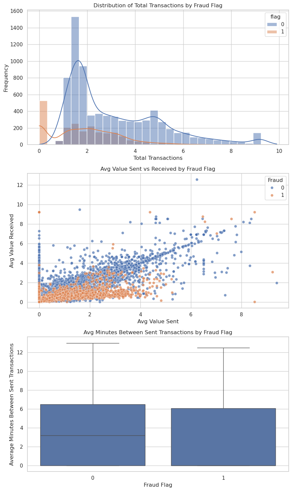
Ethereum Address-based Investigation
In the following part we analyze transaction and activity patterns per addresses.
Transaction Activity Pattern:
- Fraudulent accounts diferentiate from legitimate ones by showing disproportionate sent/received transaction counts.
- Clustering around high 'sent tnx values' could indicate fraudulent activity (money laundring) with accounts used primarily for outgoing transactions.
Account Lifetime vs Total Transactions:
- A high number of transactions in a short lifespan (time between first and last transaction) potentialy indicates bot-like behavior or a 'disposable' account used for fraud.
- As a note, legitimate accounts are more likely to have consistent activity over time.
Contract Creation:
- Fraudulent accounts create more contracts as part of scams or malicious activity.
- Legitimate accounts show lower (or no) contract creation.
Transaction Ratio:
- Imbalanced ratios (extremely high or low) could indicate suspicious behavior (for example accounts used primarily for 'siphoning' funds).
Code
# basic addr statstotal_addresses =len(df)fraudulent_addresses = df['flag'].sum()legitimate_addresses = total_addresses - fraudulent_addresses# for plotsfig, ((ax1, ax2), (ax3, ax4)) = plt.subplots(2, 2, figsize=(16, 14))# Plot 1 Transaction Activity Patternssns.scatterplot(data=df, x='sent tnx', y='received tnx', hue='flag',#size='unique received from addresses', alpha=0.6, ax=ax1)ax1.set_title('Transaction Activity Pattern by Address Type')ax1.set_xlabel('Sent Transactions')ax1.set_ylabel('Received Transactions')ax1.legend(title='Flag (1=Fraudulent)')# Plot 2 account lifetime vs total account Aativitytotal_tx = df['sent tnx'] + df['received tnx'] # calc total transsns.scatterplot(data=df, x='time diff between first and last (mins)', y=total_tx, hue='flag', palette=['blue', 'red'], alpha=0.6, ax=ax2)ax2.set_title('Account Lifetime vs Total Transactions')ax2.set_xlabel('Account Lifetime (time between first and last transaction)')ax2.set_ylabel('Total Transaction Volume')# Plot 3 Contract Creation Distributionsns.boxplot(data=df, x='flag', y='number of created contracts', ax=ax3)ax3.set_title('Contract Creation by Address Type')ax3.set_xlabel('Address Type (0=Normal, 1=Fraudulent)').......................12.235.2.22ax3.set_ylabel('Number of Created Contracts')# Plot 4: transaction ratio Analysisdf['tx_ratio'] = df['sent tnx'] / (df['received tnx'] +1) # 1 for division by zerosns.histplot(data=df, x='tx_ratio', hue='flag', multiple="layer", bins=50, ax=ax4)ax4.set_title('Distribution of Sent/Received Transaction Ratio')ax4.set_xlabel('Sent/Received Transaction Ratio')ax4.set_xscale('log')plt.tight_layout()plt.show()
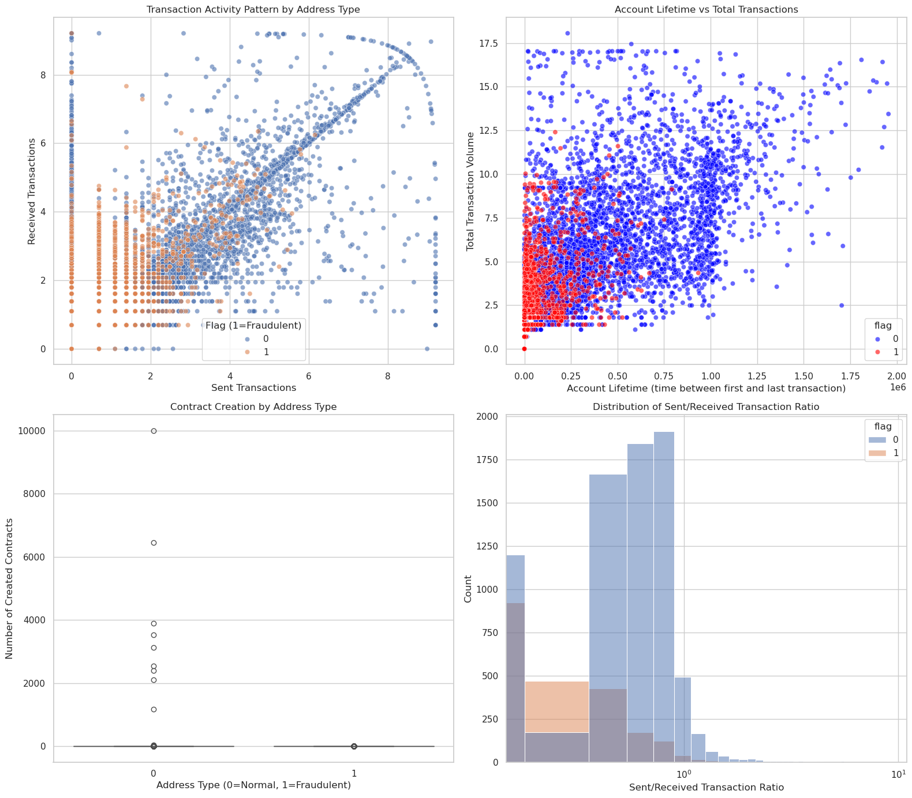
Behavior, Risk and Correlation Analysis
Behavior
Groups the data by fraud status (flag) and calculates key metrics:
- Average sent/received transactions
- Average number of unique addresses
- Average time span
- Contracts created
Following is an analysis that highlights patterns in behavior between legitimate and fraudulent accounts.
Code
## basic statisticsprint("\n ====== Address Analysis Overview ===")print(f"Total addresses analysed: {total_addresses:,}")print(f"Fraudulent addresses: {fraudulent_addresses:,} ({(fraudulent_addresses/total_addresses)*100:.2f}%)")print(f"Legitimate addresses: {legitimate_addresses:,} ({(legitimate_addresses/total_addresses)*100:.2f}%)")## pattern analysisprint("\n=== Transaction Pattern Analysis ===")for flag in [0, 1]: subset = df[df['flag'] == flag] status ="Fraudulent"if flag ==1else"Legitimate"print(f"\n{status} Addresses Statistics:")print(f"Average sent transactions: {subset['sent tnx'].mean():.2f}")print(f"Average received transactions: {subset['received tnx'].mean():.2f}")print(f"Average unique receivers: {subset['unique received from addresses'].mean():.2f}")print(f"Average contracts created: {subset['number of created contracts'].mean():.2f}")print(f"Average time span (mins): {subset['time diff between first and last (mins)'].mean():.2f}")
====== Address Analysis Overview ===
Total addresses analysed: 9,841
Fraudulent addresses: 2,179 (22.14%)
Legitimate addresses: 7,662 (77.86%)
=== Transaction Pattern Analysis ===
Legitimate Addresses Statistics:
Average sent transactions: 2.04
Average received transactions: 2.50
Average unique receivers: 35.45
Average contracts created: 4.76
Average time span (mins): 264718.26
Fraudulent Addresses Statistics:
Average sent transactions: 0.86
Average received transactions: 1.58
Average unique receivers: 12.48
Average contracts created: 0.09
Average time span (mins): 55230.06
Risk Analysis
Transaction Ratio (tx_ratio): Measures imbalance between sent and received transactions, a high ratio could indicate suspicious behavior (accounts mainly used for outgoing transactions).
Activity Intensity (activity_intensity): Measures the frequency of sent transactions relative to the account’s active time. A high value could mean excessive or unusual activity.
Risk Score: Combines outlier indicators:
- Flags accounts with extreme values (above the 95th percentile) for:
- tx_ratio
- activity_intensity
- Contracts created
Code
## Risk analysis## identify high-risk patternsrisk_factors = df.copy()risk_factors['tx_ratio'] = df['sent tnx'] / (df['received tnx'] +1)risk_factors['activity_intensity'] = df['sent tnx'] / (df['time diff between first and last (mins)'] +1)# calculate risk scores based on calculatedrisk_factors['risk_score'] = ( (risk_factors['tx_ratio'] > risk_factors['tx_ratio'].quantile(0.95)).astype(int) + (risk_factors['activity_intensity'] > risk_factors['activity_intensity'].quantile(0.95)).astype(int) + (risk_factors['number of created contracts'] > risk_factors['number of created contracts'].quantile(0.95)).astype(int))print("\n=== High Risk Pattern Analysis ===")high_risk = risk_factors[risk_factors['risk_score'] >=2]print(f"Number of addresses with high-risk patterns: {len(high_risk)} ({len(high_risk)/len(df)*100:.2f}%)")
=== High Risk Pattern Analysis ===
Number of addresses with high-risk patterns: 22 (0.22%)
Correlation analysis
We follow our exploration of the dataset with insights into how key attributes used in the investigation are related to each other.
Code
## Correlation#correlation_matrix = df[['sent tnx', 'received tnx', 'number of created contracts','unique received from addresses', 'time diff between first and last (mins)','flag']].corr()# heatmap for correlations between key featuresplt.figure(figsize=(10, 8))sns.heatmap(correlation_matrix, annot=True, cmap='coolwarm', center=0)plt.title('Correlation Matrix for key features')plt.tight_layout()plt.xticks(rotation=65, ha='right')plt.show()
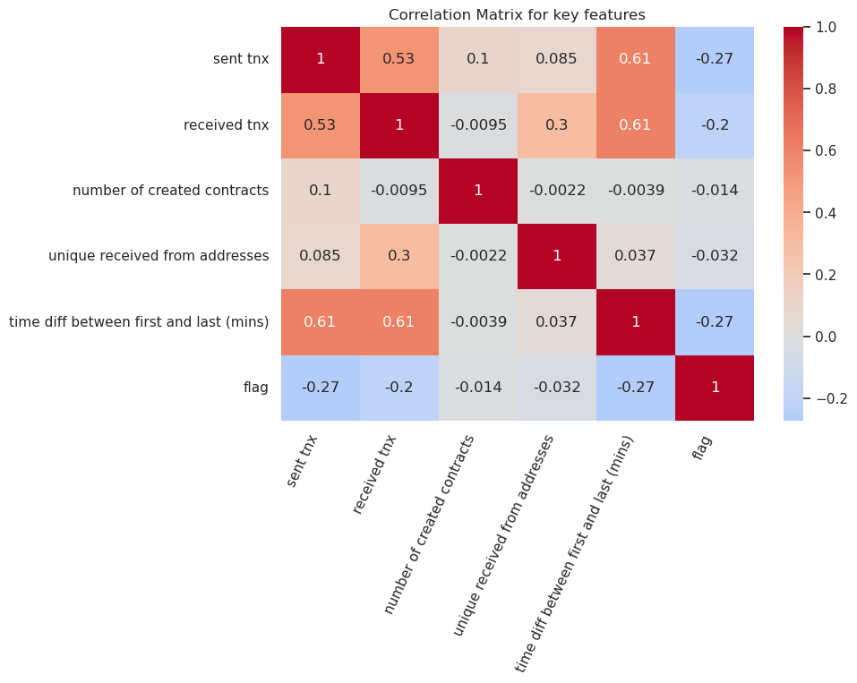
Drill-down Analysis
The broad patterns above invite sharper questions. This final movement chases five specific fraud hypotheses through the data, scenario by scenario.
Use Case Scenarios
Focusing on a subset of data identified previously as containing key features, we drill down to identify patterns and anomalies in the Ethereum transaction data. The goal is to uncover insights about how fraudulent accounts differ from non-fraudulent ones based on transaction behaviors, token usage, and interactions. These insights will help develop better understanding of ilicit behavior and provide actionable insights to security and compliance teams.
Analyzing Transaction Volume for Fraudulent vs. Non-Fraudulent Accounts, fraudulent accounts often show anomalous transaction patterns, such as higher or lower transaction volumes compared to normal accounts.
Do fraudulent accounts send or receive significantly more (or fewer) transactions than non-fraudulent ones?
Is there a noticeable difference between the volumes send and the volumes received inside each group and between them?
Code
# Grouping data by fraud flag to analyze transaction volumefraud_stats = df.groupby('flag')[['total ether sent', 'total ether received']].mean()print("\nAverage Transaction Volume by Fraud Flag:\n", fraud_stats)# transaction volumesplt.figure(figsize=(12, 6))fraud_stats.plot(kind='bar', stacked=True, colormap="Set2")plt.title("Average Transaction Volume and Ether Sent/Received by Fraud Flag")plt.xlabel("Fraud Flag")plt.ylabel("Average Volume")plt.legend(title="Transaction Type")plt.show()
Average Transaction Volume by Fraud Flag:
total ether sent total ether received
flag
0 3.37046 3.974009
1 1.32632 1.500281
<Figure size 1200x600 with 0 Axes>
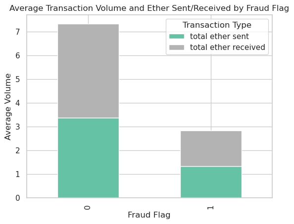
Drilling Down into ERC20 Token Activity for Fraudulent Accounts, fraudulent addresses might use specific ERC20 tokens as part of their malicious activity, for example for obfuscation or money laundering. To see if particular token activity assosiates with fraudulent addresses, we look at the most common tokens sent and received by fraud addresses.
Which ERC20 tokens are most commonly sent or received by fraudulent addresses?
Are tolens rarely sent by legitimate addresses?
Code
# Count of most sent and received tokens for fraudulent addressesfraud_tokens_sent = df[df['flag'] ==1]['erc20 most sent token type'].value_counts().head(10)fraud_tokens_received = df[df['flag'] ==1]['erc20_most_rec_token_type'].value_counts().head(10)# top tokensfig, ax = plt.subplots(1, 2, figsize=(14, 6))fraud_tokens_sent.plot(kind='bar', ax=ax[0], color='skyblue')ax[0].set_title("Top ERC20 Tokens Sent by Fraudulent Accounts")ax[0].set_xlabel("Token Type")ax[0].set_ylabel("Frequency")fraud_tokens_received.plot(kind='bar', ax=ax[1], color='salmon')ax[1].set_title("Top ERC20 Tokens Received by Fraudulent Accounts")ax[1].set_xlabel("Token Type")ax[1].set_ylabel("Frequency")plt.tight_layout()plt.show()
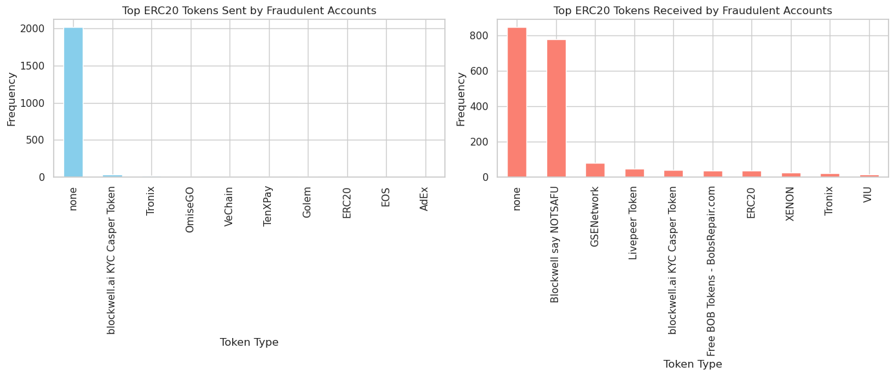
3. Combining Time-Based Variables for Fraud Analysis, time between transactions can reveal suspicious behaviors, such as automated bots conducting rapid transactions. Analyzing the average transaction time gaps in fraudulent vs. non-fraudulent addresses can reveal such behaviour patterns.
Do fraudulent accounts show different average time gaps, between sent and received transactions, compared to non-fraudulent addresses?
Code
# calculate average time between transactions (fraud and non fraud addresses)time_stats = df.groupby('flag')[['avg min between sent tnx', 'avg min between received tnx']].mean()print("\nAverage Time Between Transactions by Fraud Flag:\n", time_stats)# Visualize average time between sent and received transactionstime_stats.plot(kind='bar', colormap="coolwarm", figsize=(10, 6))plt.title("Average Time Between Sent and Received Transactions by Fraud Flag")plt.xlabel("Fraud Flag")plt.ylabel("Average Time")plt.show()
Average Time Between Transactions by Fraud Flag:
avg min between sent tnx avg min between received tnx
flag
0 3.875806 5.273065
1 2.502570 3.838736
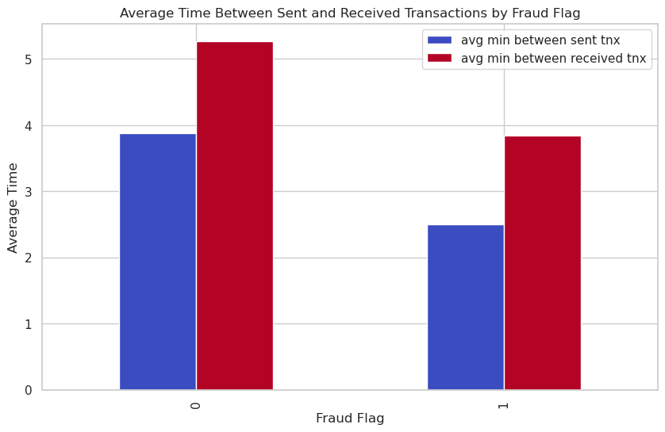
4. Investigating Ether Value Extremes, fraudulent transactions might involve unusually high or low Ether values as part of scams, laundering, or smurfing. By examining these extremes might reveal transaction patterns that fit this ilicit behavior. - Do the min and max value of transaction that is sent and received by fraudulent and non-fraudulent addresses differ?
Code
# Summary of Ether value extremes by fraud flagextremes = df.groupby('flag')[['min value received', 'max value received', 'min val sent', 'max val sent']].mean()print("\nEther Value Extremes by Fraud Flag:\n", extremes)# Plot minimum and maximum Ether valuesextremes.plot(kind='bar', stacked=False, colormap="Paired", figsize=(12, 6))plt.title("Ether Value Extremes by Fraud Flag")plt.xlabel("Fraud Flag")plt.ylabel("Average Ether Value")plt.legend(["Min val Received", "Max val Received", "Min val Sent", "Max val Sent"])plt.show()
Ether Value Extremes by Fraud Flag:
min value received max value received min val sent max val sent
flag
0 47.606401 656.750247 4.310314 393.932645
1 30.619509 53.383739 6.522282 35.721383
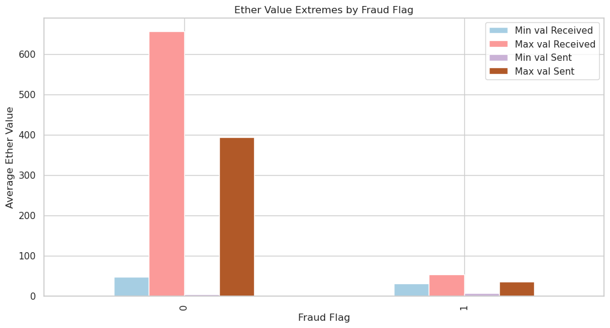
Unique Address Interactions, fraudulent addresses may transact with a wider ‘network’ of addresses (for dispersing stolen funds).
Do fraudulent addresses interact with significantly fewer unique addresses compared to non-fraudulent accounts, indicating the dispersing of funds?
Code
# unique addresses interactionsaddress_interactions = df.groupby('flag')[['unique received from addresses', 'unique sent to addresses']].mean()print("\nAverage Unique Address Interactions by Fraud Flag:\n", address_interactions)# unique address interactions plotaddress_interactions.plot(kind='bar', colormap="viridis", figsize=(10, 6))plt.title("Average Unique Addresses Interacted with by Fraud Flag")plt.xlabel("Fraud Flag")plt.ylabel("Average Number of Unique Addresses")plt.legend(["Received From", "Sent To"])plt.show()
Average Unique Address Interactions by Fraud Flag:
unique received from addresses unique sent to addresses
flag
0 35.447272 32.253067
1 12.475906 3.290500
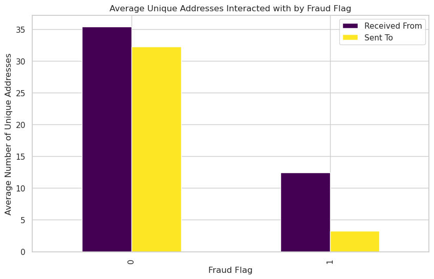
What the exploration established
Read together, the three movements leave four durable observations. First, every value and volume variable is heavily right-tailed, which is why log scales are the working currency of every later chapter. Second, the label is imbalanced (~22% flagged), which means raw accuracy will flatter any classifier and evaluation must be imbalance-aware — a point Chapter 5 returns to with numbers. Third, the two populations differ behaviourally, not just in scale: most strikingly, fraudulent addresses operate within far narrower networks, interacting on average with ~12.5 unique senders and ~3.3 unique recipients versus ~35 and ~32 for legitimate addresses, alongside distinct timing and token-activity patterns. Fourth, the value features correlate in clusters, so the signals overlap — no single variable tells the story alone.
These are descriptive observations: patterns an analyst can see, not yet claims that survive scrutiny. Chapter 3 puts five of them under formal statistical testing, and Chapters 4 and 5 ask whether they predict — retained balance, and the fraud flag itself.